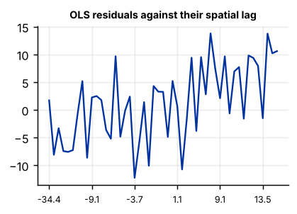

Run this model on your own data in Open Econometric Systems →
Step 1The question and the model
Do nearby places resemble each other, and why? Ordinary regression assumes that errors are independent across places. Two models relax this. The spatial error model puts the dependence in the unobserved factors:
The spatial lag model puts it in the outcome itself, so that the outcome of a place depends on those of its neighbours:
\(W\) is a weights matrix with \(w_{ij} > 0\) if \(j\) is a neighbour of \(i\), row-standardised so that each row sums to one. Here the neighbours of a place are its \(k\) nearest places by the distance between centres. Both models are estimated by maximum likelihood, with the Jacobian \(\ln|I - \rho W|\) from the eigenvalues of \(W\). In the lag model \(\beta_k\) is not the marginal effect, because a change in \(x\) in one place feeds through the neighbours; the direct, indirect and total effects are averages of the matrix \((I - \rho W)^{-1}\beta_k\) (LeSage and Pace 2009).
How to write it: the model
We regress the crime rate of the 49 Columbus neighbourhoods on household income and house value by OLS, test the residuals for spatial dependence with Moran's I and the Lagrange multiplier tests for a spatial lag and a spatial error, using a weights matrix of the five nearest neighbours, and estimate the spatial lag and spatial error models by maximum likelihood. We compare the three models by the log-likelihood, AIC and BIC, report the direct and indirect effects for the lag model, and check the results against the number of neighbours and a simulation.
Step 2Load the data
import numpy as np
import pandas as pd
import oes_engine as oes # pip install -e open-econometric-systems/oes-engine
d = pd.read_csv("columbus.csv")
print(len(d), "neighbourhoods")
print(d[["crime", "inc", "hoval"]].describe().round(2).loc[["mean", "std", "min", "max"]])
print("correlations with crime: income", round(d.crime.corr(d.inc), 3), ", house value", round(d.crime.corr(d.hoval), 3))
c = d[["x", "y"]].to_numpy()
dist = np.sqrt(((c[:, None] - c[None]) ** 2).sum(-1)); np.fill_diagonal(dist, np.inf)
nn = np.argsort(dist, 1)[:, :5]
print("average crime of the five nearest neighbours vs own crime: correlation", round(np.corrcoef(d.crime, d.crime.to_numpy()[nn].mean(1))[0, 1], 3))49 neighbourhoods
crime inc hoval
mean 35.13 14.37 38.44
std 16.73 5.70 18.47
min 0.18 4.48 17.90
max 68.89 31.07 96.40
correlations with crime: income -0.696 , house value -0.574
average crime of the five nearest neighbours vs own crime: correlation 0.719How to read it
There are 49 neighbourhoods. The crime rate (residential burglaries and vehicle thefts per thousand households) averages 35.1 and ranges from 0.2 to 68.9; household income averages 14.4 (thousands of dollars) and house value 38.4. Crime is negatively correlated with income (-0.70) and with house value (-0.57). The crime rate of a neighbourhood and the mean crime rate of its five nearest neighbours have a correlation of 0.72: nearby neighbourhoods look alike, which is what the tests below ask about.
Step 3OLS and the tests for spatial dependence
spec = dict(y="crime", x=["inc", "hoval"], x_coord="x", y_coord="y", neighbours=5)
r = oes.run("spatial_cs", d.to_csv(index=False), spec)
oes.summary(r)
oes.show(r, "OLS")
oes.show(r, "Spatial dependence tests")
oes.plot(r)Areas: 49
Moran's I of residuals: 0.331
SAR rho: 0.464
SEM lambda: 0.678
Best model by AIC: SEM
OLS
Coefficient Robust s.e. t p
Variable
Constant 68.6190 4.2331 16.2101 0.0000
inc -1.5973 0.4610 -3.4651 0.0012
hoval -0.2739 0.1626 -1.6850 0.0988
Note: 49 areas; weights: 5 nearest neighbours, row-standardised.
Spatial dependence tests on the OLS residuals
Statistic p-value Detail
Test
Moran's I of the OLS residuals 0.3310 0.0000 z = 4.78; expected under no autocorrelation -0.033
LM test, spatial error 15.1864 0.0001 H0: no spatial error dependence
LM test, spatial lag 15.9334 0.0001 H0: no spatially lagged dependent variable
Robust LM test, spatial error 3.0573 0.0804 valid with a spatial lag present
Robust LM test, spatial lag 3.8044 0.0511 valid with spatial error present
How to read it
The OLS coefficients are -1.597 for income (robust t = -3.5) and -0.274 for house value (t = -1.7), with a constant of 68.6; these are the coefficients that Anselin (1988) reports for this data set. The residuals are spatially correlated: Moran's I is 0.331 against an expectation of -0.033 under independence (z = 4.78, p < 0.001). Both Lagrange multiplier tests reject (error 15.19, lag 15.93, both p = 0.0001). The robust versions, which are valid when the other form of dependence is present, are borderline: error 3.06 (p = 0.080) and lag 3.80 (p = 0.051). The data confirm spatial dependence but do not clearly say whether it is in the outcome or in the errors. The chart plots each residual against the average of its neighbours' residuals.
Step 4Spatial lag and spatial error models
oes.show(r, "Spatial lag model")
oes.show(r, "Spatial error model")
oes.show(r, "Model comparison")
oes.show(r, "SAR direct")Spatial lag model (SAR)
Coefficient s.e. z p
Variable
Constant 40.7742 7.6610 5.3223 0.0000e+00
inc -0.9115 0.3191 -2.8568 4.2790e-03
hoval -0.2602 0.0849 -3.0660 2.1700e-03
rho 0.4644 0.1101 4.2195 2.4000e-05
Note: Maximum likelihood; log-likelihood -180.33; sigma^2 88.300.
Spatial error model (SEM)
Coefficient s.e. z p
Variable
Constant 55.8472 6.5838 8.4825 0.0000
inc -1.0148 0.3124 -3.2479 0.0012
hoval -0.2468 0.0818 -3.0173 0.0026
lambda 0.6781 0.1186 5.7198 0.0000
Note: Maximum likelihood; log-likelihood -179.49; sigma^2 80.064.
Model comparison
Log-likelihood Parameters AIC BIC
Model
OLS -187.3772 4 382.7545 390.3218
SAR -180.3269 5 370.6537 380.1128
SEM -179.4899 5 368.9798 378.4389
Note: Lower AIC and BIC are better.
SAR direct, indirect and total effects
Direct Indirect (spillover) Total
Variable
inc -0.9549 -0.7471 -1.7019
hoval -0.2726 -0.2133 -0.4858
Note: LeSage and Pace (2009): with a spatial lag the coefficient is not the marginal effect; effects are averages of the matrix (I - rho W)^-1 b.How to read it
The spatial lag model gives \(\hat\rho = 0.464\) (z = 4.2) and the spatial error model \(\hat\lambda = 0.678\) (z = 5.7): the log-likelihood rises from -187.4 (OLS) to -180.3 (lag) and -179.5 (error), and AIC falls from 382.8 to 370.7 and 369.0. The error model is slightly preferred by AIC and BIC, but a difference of 1.7 AIC points is small. The income coefficient is -0.91 in the lag model and -1.01 in the error model, and the house value coefficient is -0.26 and -0.25: smaller in absolute value than the OLS estimates in the lag model, which attributes part of the effect to the neighbours. In the lag model the coefficient on income is not the marginal effect. The direct effect (a change of income in one neighbourhood on its own crime, including the feedback through neighbours) is -0.95, the indirect effect (on the crime of all other neighbourhoods) is -0.75 and the total effect is -1.70: about 44% of the total effect of income falls on other neighbourhoods. The house value effects are -0.27, -0.21 and -0.49.
Step 5Robustness: the weights matrix
for k in (4, 8, 12):
rk = oes.run("spatial_cs", d.to_csv(index=False), dict(spec, neighbours=k))
t = rk["tables"]
mi = t[1]["rows"][0]
print(f"k = {k:2d}: Moran's I {mi[1]:.3f} (p = {mi[2]}), rho {t[2]['rows'][-1][1]:.3f}, lambda {t[3]['rows'][-1][1]:.3f}, AIC OLS/SAR/SEM", [round(row[3], 1) for row in t[4]["rows"]], ", income coefficient SAR/SEM", round(t[2]["rows"][1][1], 3), round(t[3]["rows"][1][1], 3))
r1 = oes.run("spatial_cs", d.to_csv(index=False), dict(spec, x=["inc"]))
print("income only: Moran's I", r1["summary"][1]["value"], ", rho", r1["summary"][2]["value"], ", lambda", r1["summary"][3]["value"])k = 4: Moran's I 0.374 (p = 0.0), rho 0.483, lambda 0.679, AIC OLS/SAR/SEM [382.8, 367.9, 367.0] , income coefficient SAR/SEM -0.942 -1.034 k = 8: Moran's I 0.181 (p = 0.0002), rho 0.610, lambda 0.742, AIC OLS/SAR/SEM [382.8, 372.2, 375.4] , income coefficient SAR/SEM -0.947 -1.032 k = 12: Moran's I 0.029 (p = 0.1861), rho 0.498, lambda 0.347, AIC OLS/SAR/SEM [382.8, 380.3, 384.2] , income coefficient SAR/SEM -1.223 -1.446 income only: Moran's I 0.32 , rho 0.466 , lambda 0.66
How to read it
The weights matrix matters. With 4 nearest neighbours Moran's I is 0.374, \(\hat\rho = 0.48\) and \(\hat\lambda = 0.68\); with 8 neighbours, 0.181, 0.61 and 0.74; with 12 neighbours Moran's I falls to 0.029 and is no longer significant (p = 0.19), because the neighbourhood now covers a quarter of the city and dilutes the local similarity. The income coefficient moves between -0.94 and -1.45 across the models and weights, and the preferred model changes from the error model (4 neighbours) to the lag model (8 and 12). With income only, Moran's I is 0.32, \(\hat\rho = 0.47\) and \(\hat\lambda = 0.66\), so the dependence is not an artefact of the omitted house value. The conclusion that crime is spatially clustered is robust; the choice between the lag and the error model is not, and the weights should be reported with every result.
Step 6Diagnostics: do the tests and estimates recover known dependence?
import oes_engine.productivity as pr
rng = np.random.default_rng(0)
n = 300; xy = rng.uniform(0, 10, (n, 2))
W = pr._knn_w(xy, 6); W = W / W.sum(1, keepdims=True)
def make(kind, par):
x = rng.normal(size=n); e = rng.normal(size=n)
A = np.linalg.inv(np.eye(n) - par * W)
y = A @ (1 + 2 * x + e) if kind == "sar" else 1 + 2 * x + A @ e
return pd.DataFrame(dict(y=y, x=x, a=xy[:, 0], b=xy[:, 1]))
sp = dict(y="y", x=["x"], x_coord="a", y_coord="b", neighbours=6)
for kind, par in (("sar", 0.5), ("sem", 0.6), ("sar", 0.0)):
rs = oes.run("spatial_cs", make(kind, par).to_csv(index=False), sp)
t = rs["tables"]; lm = {row[0]: row for row in t[1]["rows"]}
best = min(t[4]["rows"], key=lambda row: row[3])[0]
print(f"true {kind.upper()} {par}: rho {t[2]['rows'][-1][1]:.3f}, lambda {t[3]['rows'][-1][1]:.3f}; LM lag p {lm['LM test, spatial lag'][2]}, LM error p {lm['LM test, spatial error'][2]}, robust lag p {lm['Robust LM test, spatial lag'][2]}, robust error p {lm['Robust LM test, spatial error'][2]}; best by AIC: {best}")
rej = 0
for _ in range(40):
rs = oes.run("spatial_cs", make("sar", 0.0).to_csv(index=False), sp)
rej += rs["tables"][1]["rows"][0][2] < 0.05
print("Moran's I rejects the 5% level in", rej, "of 40 samples without spatial dependence")true SAR 0.5: rho 0.477, lambda 0.613; LM lag p 0.0, LM error p 0.0, robust lag p 0.0, robust error p 0.006; best by AIC: SAR true SEM 0.6: rho 0.298, lambda 0.532; LM lag p 0.0, LM error p 0.0, robust lag p 0.0106, robust error p 0.0; best by AIC: SEM true SAR 0.0: rho 0.071, lambda 0.187; LM lag p 0.2052, LM error p 0.0406, robust lag p 0.8923, robust error p 0.1066; best by AIC: SEM Moran's I rejects the 5% level in 2 of 40 samples without spatial dependence
How to read it
We simulate 300 places with a spatial lag of 0.5: the lag estimate is 0.48, all four tests reject, and AIC picks the lag model. With a spatial error of 0.6, the estimated error coefficient is 0.53, and AIC picks the error model; in both cases the robust test for the true form is the stronger (p < 0.001 against 0.006 and 0.011 for the wrong form). With no dependence the lag estimate is 0.07 and the tests are mostly quiet (the error test has p = 0.04, the other three p between 0.11 and 0.89); AIC prefers the error model by a small margin, so a model chosen only by AIC on a small difference means little. Moran's I rejects at the 5% level in 2 of 40 samples without dependence, as it should. The test suite checks Moran's I against its direct formula and the likelihood against a numerical maximisation.
Step 7Write the results
How to write it: results
We test for spatial dependence in the crime rates of 49 Columbus neighbourhoods and estimate spatial models with a five-nearest-neighbour weights matrix. The OLS regression on income (-1.60) and house value (-0.27) leaves residuals that are spatially correlated (Moran's I = 0.33, z = 4.8; Lagrange multiplier tests for a lag and an error 15.9 and 15.2). The spatial lag model gives \(\hat\rho\) = 0.46 and the spatial error model \(\hat\lambda\) = 0.68; the error model has the lower AIC (369.0 against 370.7 for the lag model and 382.8 for OLS) but the robust tests do not clearly separate the two. In the lag model the effect of income on crime is -0.95 within a neighbourhood and -0.75 in other neighbourhoods. Spatial clustering is found for 4 and 8 neighbours but not for 12, and the preferred model depends on the weights. In simulations the tests and estimates recover the true form of dependence in samples of 300.
References. Anselin (1988), Spatial Econometrics: Methods and Models; Anselin, Bera, Florax and Yoon (1996), Regional Science and Urban Economics; LeSage and Pace (2009), Introduction to Spatial Econometrics; Moran (1950), Biometrika; Cliff and Ord (1981), Spatial Processes.